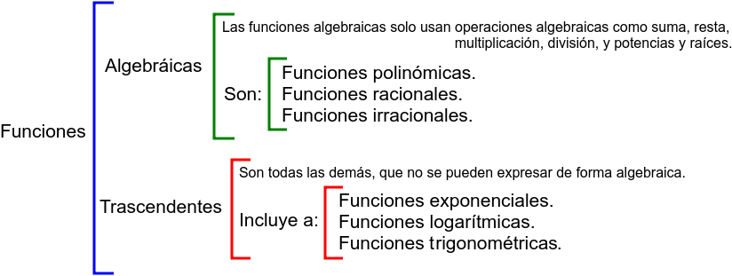

Marco teórico: Las funciones
En este tema estudiaremos las funciones matemáticas, que permiten relacionar dos conjuntos de valores mediante una regla que asigna a cada valor de entrada un único valor de salida.
Las funciones están presentes en numerosas situaciones de nuestra vida diaria, ya que permiten describir cómo cambia una magnitud cuando varía otra. Por ejemplo, sirven para calcular el precio de una compra según la cantidad de productos, la distancia recorrida en función del tiempo, el coste de un viaje según los kilómetros o la evolución de la temperatura a lo largo del día. También se utilizan en campos como la economía, la física, la medicina, la ingeniería y la tecnología. Por ello, estudiar las funciones nos ayuda a comprender mejor nuestro entorno, interpretar datos y resolver problemas reales.
Aprenderemos a representar las funciones mediante gráficas, tablas de valores y expresiones algebraicas, así como a interpretar la información que nos proporciona cada representación.
@talentoargentino Qué es una función #mariaines #profesora #matematica #argentina #talento #fyp #foryou ♬ sonido original - Talento Argentino
A continuación, estudiaremos sus principales características: dominio y recorrido, puntos de corte con los ejes, continuidad y discontinuidades, intervalos de crecimiento y decrecimiento, máximos y mínimos, simetría, periodicidad y existencia de función inversa. También aprenderemos a calcular e interpretar la tasa de variación media (TVM).
Después, analizaremos los principales tipos de funciones y sus propiedades:
- Funciones polinómicas: especialmente las funciones lineales, afines y cuadráticas.
- Funciones racionales: cocientes de polinomios, prestando atención a su dominio y sus asíntotas.
- Funciones irracionales: aquellas que contienen raíces, cuyo dominio puede estar condicionado por el radicando.
- Funciones exponenciales: en las que la variable aparece en el exponente.
- Funciones logarítmicas: relacionadas con las exponenciales y sus funciones inversas.
- Funciones trigonométricas: seno, coseno y tangente, que presentan comportamientos periódicos.
- Funciones definidas a trozos: aquellas cuya expresión cambia según el intervalo de valores de la variable, como la función valor absoluto.
Que las podemos clasificar según la siguiente imagen:

Por último, representaremos funciones, observaremos sus gráficas y comprobaremos sus propiedades.
El objetivo del tema es aprender a reconocer, representar, analizar e interpretar funciones, comprendiendo cómo describen relaciones entre distintas magnitudes y cómo aparecen en situaciones de la vida cotidiana.